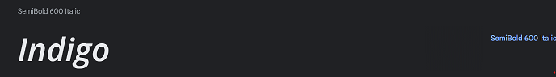

Rapport
Planen var att laga en sida för en restuarang.
Hemsidan skulle lätt berätta om miljön och idén med
restaurangen. Man skulle kunna se bilder på maten
samt enkelt se menyerna. Planen var att sidan skulle
rikta sig mot eventuella gäster som var intresserade
av restuarangen.
Iden var som sådan att
1. Skapa en hemsida för en restaurang
2. Ha bilder på diverse mat och läge
3. Visa var det ligger
4. Restaurangens koncept
5. Menyer
6. Kontaktuppgifter
7. Primärt dator men också mobil och tablets.
En skiss gjordes som sådan.
Jag visste redan att jag ville ha nån form av tegel som bakgrund.
Och site-mapen
Det blev några ändringar under utvecklingen på layouten, t.ex
"mitt namn" blev nere i höger hörn istället för mitten av
sidan och en "RAPPORT" blev tillsatt i vänster hörn samt
"bilder" kom till i "menyn". Det svåraste var att börja
med menyn och få den att fungera. Det var absolut det som
tog längst tid. Sedan ville jag att man skulle kunna ta sig
tillbaka "hem" igen på ett smidigt sätt och beslutade att
klicka på "Indigo" skulle ta en tillbaka "hem"-knapp. Att
bli av med den blå stilen på texten tog sin lila tid med en
del strul men gick till slut.
När jag skulle börja skriva in texten på sidan så ville texten
alltid bara vara högst upp på sidan. Jag satt länge med det
problemet men efter lite hjälp av Dennis så kom vi fram till
att min använding av top %, left % och posistion absolut var
problemet. Och lösningen var så simpelt som att ta bort det
och lägga dit text-alight center.
Sedan kom jag på att på Lunch sidan kunde jag lägga dit en iframe med länk tills Ålands lunchguide och på så
sätt skulle sidan uppdateras varje dag och automatiskt visa dagens lunch.
Både bistro och a ala carten varar i ca 2 månader så dessa sidor behöver inte uppdateras lika mycket. Men
eftersom i verkligenheten behöver lunchen uppdateras dagligen eller en vecka i taget kände jag att på detta viss
skulle "kunden" spara tid.
Men det visade sig att de har blockat folk från att använda sin sida i iframes. :( Så skickade ett mail men
annars övergav idén för tillfället.
Fick svar från dom vid senare tillfälle att jag fick tillåtelse att cracka det för att få den att fungera, men
kände att det var lite onödigt då man inte får göra det egentligen. Därför körde jag på en vanlig lunch meny på
sidan.
Började sedan på "Bilder" tabben som gick snabbt att få att fungera med majoriteten av tiden gick till att
editera bilderna att vara i rätt size och fromat så att det inte skulle ta onödigt space.
För att få hemsidan finare på mobil och fungera smidigt och enkelt gjorde jag så att vid 1300px försvinner
Iframen från "bilder" sidan samt skisserna från "rapport" sidan.
Min svg samt audio snip lades in i rapport bara för att jag inte tyckte den hörde hemma på något bra sätt på
huvudsidan. Ignorera den konstiga färgen på audio controlls, är färgblind och förskte få det att matscha. Min
animering på sidan är den 0,2 sec delayn som är på att hoovra över menyn och den söta lila BIKY the bike lägnst
ner på Rapport sidan. Animeringen för hojen försvinner vid tablet/phone mode.
Valideringen var ett av de sista projekten. Var en hel del "rookie mistakes" i koden. Så som ett onödigt
använade av "id" som egentligen kunde vara "classes". Eller lite öppna och kostigt stängda tags som man tidigare
inte hade sett. Och så hade man glömt sätta dit en "alt" på alla bilder i princip.